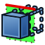
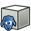
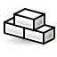

Arch Workbench/fr

Introduction
L' atelier Arch fournit un flux de travail moderne Building'InformationModelling (BIM) à FreeCAD, avec la prise en charge de fonctions telles que des entités architecturales entièrement paramétriques comme les murs, les poutres, les toits, les fenêtres, les escaliers, les tuyaux et le mobilier. Il prend en charge les fichiers Industry Foundation Classes (IFC) et la production de plans d'étage en 2D en combinaison avec l'
atelier Arch fournit un flux de travail moderne Building'InformationModelling (BIM) à FreeCAD, avec la prise en charge de fonctions telles que des entités architecturales entièrement paramétriques comme les murs, les poutres, les toits, les fenêtres, les escaliers, les tuyaux et le mobilier. Il prend en charge les fichiers Industry Foundation Classes (IFC) et la production de plans d'étage en 2D en combinaison avec l' atelier TechDraw.
atelier TechDraw.
L'atelier Arch importe tous les outils de l' atelier Draft car il utilise ses objets 2D pour créer des objets architecturaux paramétriques 3D. Néanmoins, Arch peut également utiliser des formes solides créées avec d'autres ateliers tels que
atelier Draft car il utilise ses objets 2D pour créer des objets architecturaux paramétriques 3D. Néanmoins, Arch peut également utiliser des formes solides créées avec d'autres ateliers tels que  Part et
Part et  PartDesign.
PartDesign.
La fonctionnalité BIM de FreeCAD est progressivement divisée en cet atelier Arch, qui contient des outils d'architecture de base, et l' Atelier BIM, disponible depuis le
Atelier BIM, disponible depuis le  Gestionnaire des extensions. Cet atelier BIM ajoute une nouvelle couche d'interface en plus des outils Arch dans le but de rendre le flux de travail BIM plus intuitif et convivial. Voir FreeCAD BIM migration guide.
Gestionnaire des extensions. Cet atelier BIM ajoute une nouvelle couche d'interface en plus des outils Arch dans le but de rendre le flux de travail BIM plus intuitif et convivial. Voir FreeCAD BIM migration guide.
Les développeurs de Draft, Arch et BIM collaborent également avec la communauté OSArch dans le but d'améliorer la conception des bâtiments en utilisant un logiciel entièrement gratuit.
{kind=link}
Outils
Ces outils permettent la création d'objets architecturaux.
 Mur : crée un mur à partir de rien ou en utilisant un objet sélectionné comme base.
Mur : crée un mur à partir de rien ou en utilisant un objet sélectionné comme base.
 Structure : crée un élément structurel à partir de rien ou en utilisant un objet sélectionné comme base.
Structure : crée un élément structurel à partir de rien ou en utilisant un objet sélectionné comme base.
- Armatures : ces outils, saufle dernier, ne sont disponibles que si l'atelier Reinforcement a été installé.
{kind=link}
 Armature droite : crée une barre de ferraillage droite dans un élément de structure sélectionné.
Armature droite : crée une barre de ferraillage droite dans un élément de structure sélectionné.
 Armature en U : crée une barre de ferraillage de forme U dans un élément de structure sélectionné.
Armature en U : crée une barre de ferraillage de forme U dans un élément de structure sélectionné.
 Armature en L : crée une barre de ferraillage de forme L dans un élément de structure sélectionné.
Armature en L : crée une barre de ferraillage de forme L dans un élément de structure sélectionné.
 Armature en étrier : crée une barre de renforcement d'étrier dans un élément de structure sélectionné.
Armature en étrier : crée une barre de renforcement d'étrier dans un élément de structure sélectionné.
 Armature cintrée : crée une barre de renforcement de forme cintrée dans un élément de structure sélectionné.
Armature cintrée : crée une barre de renforcement de forme cintrée dans un élément de structure sélectionné.
 Armature hélicoïdale : crée une barre de ferraillage hélicoïdale dans un élément de structure sélectionné.
Armature hélicoïdale : crée une barre de ferraillage hélicoïdale dans un élément de structure sélectionné.
 Armature en colonne : crée des armatures dans une colonne sélectionnée.
Armature en colonne : crée des armatures dans une colonne sélectionnée.
 Poutre : crée des barres d'armature dans une poutre sélectionnée.
Poutre : crée des barres d'armature dans une poutre sélectionnée.
 Renfort de dalle : crée des barres d'armature dans une dalle sélectionnée.
Renfort de dalle : crée des barres d'armature dans une dalle sélectionnée.
 Renfort de semelle: crée des barres d'armature dans une semelle sélectionnée.
Renfort de semelle: crée des barres d'armature dans une semelle sélectionnée.
 Armature personnalisée : crée une barre de ferraillage personnalisée dans un élément de structure sélectionné à l'aide d'une esquisse.
Armature personnalisée : crée une barre de ferraillage personnalisée dans un élément de structure sélectionné à l'aide d'une esquisse.
 Mur-rideau : crée un mur-rideau à partir de rien ou en utilisant un objet sélectionné comme base.
Mur-rideau : crée un mur-rideau à partir de rien ou en utilisant un objet sélectionné comme base.
 Partie de bâtiment : crée une partie de bâtiment incluant les objets sélectionnés.
Partie de bâtiment : crée une partie de bâtiment incluant les objets sélectionnés.
 Projet : crée un projet incluant les objets sélectionnés.
Projet : crée un projet incluant les objets sélectionnés.
 Site : crée un site incluant les objets sélectionnés.
Site : crée un site incluant les objets sélectionnés.
 Bâtiment : crée un bâtiment incluant les objets sélectionnés.
Bâtiment : crée un bâtiment incluant les objets sélectionnés.
 Niveau : crée un niveau incluant les objets sélectionnés.
Niveau : crée un niveau incluant les objets sélectionnés.
 Référence externe : lie les objets d'un autre fichier FreeCAD dans le document en cours.
Référence externe : lie les objets d'un autre fichier FreeCAD dans le document en cours.
 Fenêtre : crée une fenêtre à partir de rien ou en utilisant un objet sélectionné comme base.
Fenêtre : crée une fenêtre à partir de rien ou en utilisant un objet sélectionné comme base.
 Toit : crée un toit incliné à partir d'une polyligne sélectionnée.
Toit : crée un toit incliné à partir d'une polyligne sélectionnée.
{kind=link}
 Axes : ajoute un réseau d'axes à 1 direction.
Axes : ajoute un réseau d'axes à 1 direction.
 Système d'axes : ajoute un système d'axes composé de plusieurs axes.
Système d'axes : ajoute un système d'axes composé de plusieurs axes.
 Grille : ajoute un objet de type grille.
Grille : ajoute un objet de type grille.
 Plan de coupe : ajoute un objet plan de coupe.
Plan de coupe : ajoute un objet plan de coupe.
 Espace : crée un objet volume vide.
Espace : crée un objet volume vide.
 Escalier : crée un objet escalier.
Escalier : crée un objet escalier.
{kind=link}
 Panneaux : crée un objet panneau à partir d'un objet 2D sélectionné.
Panneaux : crée un objet panneau à partir d'un objet 2D sélectionné.
 Découpe de panneaux : crée une vue coupée en 2D à partir d'un panneau.
Découpe de panneaux : crée une vue coupée en 2D à partir d'un panneau.
 Feuille de panneau : crée une feuille de découpe 2D comprenant des découpes de panneaux ou d'autres objets 2D.
Feuille de panneau : crée une feuille de découpe 2D comprenant des découpes de panneaux ou d'autres objets 2D.
 Calepinage : permet d'imbriquer plusieurs objets plats à l'intérieur d'une forme conteneur.
Calepinage : permet d'imbriquer plusieurs objets plats à l'intérieur d'une forme conteneur.
 Équipement : crée un objet d'équipement ou de mobilier.
Équipement : crée un objet d'équipement ou de mobilier.
 Ossature : crée un objet ossature à partir d'une mise en page sélectionnée.
Ossature : crée un objet ossature à partir d'une mise en page sélectionnée.
 Clôture : crée un objet clôture à partir d'un poteau et d'un chemin sélectionnés.
Clôture : crée un objet clôture à partir d'un poteau et d'un chemin sélectionnés.
 Treillis : crée un treillis à partir d'une ligne sélectionnée ou de zéro.
Treillis : crée un treillis à partir d'une ligne sélectionnée ou de zéro.
 Profilé : crée un profilé 2D paramétrique.
Profilé : crée un profilé 2D paramétrique.
{kind=link}
 Matériau : crée un matériau et l'attribue aux objets sélectionnés, le cas échéant.
Matériau : crée un matériau et l'attribue aux objets sélectionnés, le cas échéant.
 Multi-matériaux : crée un multi-matériaux et l'attribue aux objets sélectionnés, le cas échéant.
Multi-matériaux : crée un multi-matériaux et l'attribue aux objets sélectionnés, le cas échéant.
 Nomenclature : crée différents types de nomenclatures.
Nomenclature : crée différents types de nomenclatures.
{kind=link}
 Conduite : crée une conduite.
Conduite : crée une conduite.
 Raccord : crée un raccord en angle ou un raccord en T entre 2 ou 3 conduites sélectionnées.
Raccord : crée un raccord en angle ou un raccord en T entre 2 ou 3 conduites sélectionnées.
Outils de transformation
Ce sont des outils de modification d'objets architecturaux.
 Couper suivant un plan : découpe un objet en fonction d'un plan.
Couper suivant un plan : découpe un objet en fonction d'un plan.

Couper suivant une ligne : découpe un objet en fonction d'une ligne.
{kind=link}
 Ajouter : ajoute des objets à un composant.
Ajouter : ajoute des objets à un composant.
 Supprimer : soustrait ou supprime des objets d'un composant.
Supprimer : soustrait ou supprime des objets d'un composant.
 Prendre des cotes : permet de rentrer ou de sortir du mode prise de cotes.
Prendre des cotes : permet de rentrer ou de sortir du mode prise de cotes.
Utilitaires
Ce sont des outils supplémentaires, pour vous aider dans des tâches spécifiques.
 Composant : crée un composant Arch non-paramétrique.
Composant : crée un composant Arch non-paramétrique.

Cloner un composant : produit des composants Arch qui sont des clones d'objets Arch sélectionnés (à ne pas confondre avec Draft Cloner).
{kind=link}
 Diviser un maillage : divise un maillage sélectionné en composants séparés.
Diviser un maillage : divise un maillage sélectionné en composants séparés.
 Maillage en une forme : convertit un maillage en une forme, en unifiant les faces coplanaires.
Maillage en une forme : convertit un maillage en une forme, en unifiant les faces coplanaires.
- Sélection des maillages non-manifolds : sélectionne tous les maillages non-manifold de la sélection courante ou du document.
{kind=link}
 Supprimer la forme : rend l'objet Arch basé sur une forme cubique entièrement paramétrique.
Supprimer la forme : rend l'objet Arch basé sur une forme cubique entièrement paramétrique.
 Boucher des trous : bouche des trous d'un objet sélectionné.
Boucher des trous : bouche des trous d'un objet sélectionné.
 Fusionner des murs : fusionne deux ou plusieurs murs.
Fusionner des murs : fusionne deux ou plusieurs murs.
 Vérification : vérifie si les objets sélectionnés sont des solides et ne contiennent pas de défauts.
Vérification : vérifie si les objets sélectionnés sont des solides et ne contiennent pas de défauts.
 Basculer en B-rep IFC : force un objet sélectionné à être exporté en tant que IfcFacetedBrep.
Basculer en B-rep IFC : force un objet sélectionné à être exporté en tant que IfcFacetedBrep.
 3 vues à partir d'un maillage : crée des vues de dessus, de face et de côté à partir d'un maillage.
3 vues à partir d'un maillage : crée des vues de dessus, de face et de côté à partir d'un maillage.
- Tableur IFC : crée une feuille de calcul pour stocker les propriétés IFC d'un objet.
{kind=link}
 Bascule des sous composants : affiche ou cache les sous-composants d'un objet Arch.
Bascule des sous composants : affiche ou cache les sous-composants d'un objet Arch.
Préférences

Préférences : préférences pour l'apparence par défaut des murs, structures, armatures, fenêtres, escaliers, panneaux, tuyaux, grilles et axes.
{kind=link}
Formats de fichiers
- IFC : Industry Foundation Classes
- DAE : format de maillage de Collada
- OBJ : format de maillage OBJ (seulement en exportation)
- JSON : JavaScript Object Notation format (seulement en exportation)
- 3DS : format 3DS (seulement en importation)
- SHP : shapefiles GIS (seulement en importation)
API
L'atelier Arch peut être utilisé dans des scripts Python et dans des macros grâce aux fonctions Arch Python API.
Tutoriels
- Migrer de Revit vers FreeCAD
- Architecture workflow : un exemple de la manière dont FreeCAD peut commencer à avoir sa place préliminaire dans un flux de travail d’architecture.
- Tutoriel Arch(v0.14)
- Tutoriel Arch sur le blog de Yorik(v0.13)
- Présentation Vidéo de l'atelier Arch (2016)
- Tutoriel panneaux Arch (v0.15)
- Chapitre sur la modélisation BIM dans le Guide de l'Utilisateur FreeCAD
- Importation de fichiers STL ou OBJ
- Exportation de fichiers STL ou OBJ
- Éléments : Mur, Structure, Mur-rideau, Fenêtre, Toiture, Espace, Escalier, Équipement, Ossature, Clôture, Treillis, Profilé, Conduite, Raccord
- Renforcements : Armature droite, Armature en U, Armature en L, Armature en étrier, Armature cintrée, Armature hélicoïdale, Rebar Armature en colonne, Rebar Poutre, Rebar Renfort de dalle, Rebar Renfort de semelle, Armature personnalisée
- Panneaux : Panneau, Découpe de panneau, Feuille de panneaux, Calepinage
- Matériaux : Matériau, Matériaux multiples
- Organisations : Partie de bâtiment, Projet, Site, Bâtiment, Étage, Référence externe, Plan de coupe, Nomenclature
- Axes : Axes, Système d'axes, Grille
- Modifications : Couper suivant un Plan, Ajouter un composant, Enlever un composant, Prendre des cotes
- Utilitaires : Composant, Cloner un composant, Diviser un maillage, Maillage vers une forme, Sélection de maillages non-manifold, Supprimer la forme, Fermer les trous, Fusionner des murs, Vérification, Bascule marqueur Brep IFC, Explorateur IFC, 3 vues depuis un maillage, Tableur IFC, Bascule des sous composants
- Additionnels : Préférences, Préférences Import-Export (IFC, DAE, OBJ, JSON, 3DS, SHP), IfcOpenShell, IfcPlusPlus, Arch API
- Démarrer avec FreeCAD
- Installation : Téléchargements, Windows, Linux, Mac, Logiciels supplémentaires, Docker, AppImage, Ubuntu Snap
- Bases : À propos de FreeCAD, Interface, Navigation par la souris, Méthodes de sélection, Objet name, Préférences, Ateliers, Structure du document, Propriétés, Contribuer à FreeCAD, Faire un don
- Aide : Tutoriels, Tutoriels vidéo
- Ateliers : Std Base, Assembly, BIM, CAM, Draft, FEM, Inspection, Material, Mesh, OpenSCAD, Part, PartDesign, Points, Reverse Engineering, Robot, Sketcher, Spreadsheet, Surface, TechDraw, Test